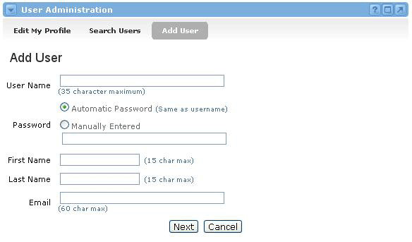
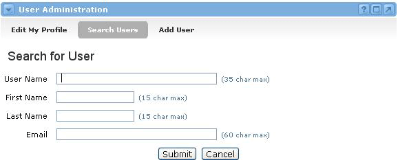

Groupware User Administration
Looking for more help options? Click Here
Groupware User Administration : Managing Users

The User Administration channel allows the user, if they have appropriate system permissions, to add and edit users within the system. This channel will only be available in implementations where the institution is not using an external authentication method such as LDAP or Active Directory.
Search Users- Allows the user to search for other users within the system. Supported search criteria including username, first name, last name, and/or email address.
Add User - Allows the user to add new users to the system.
Edit My Profile - Allows users to access functions to change their passwords and email addresses.
Adding a Groupware User : Creating a New User
To add a new user to the system, complete the following steps:
- Locate the User Administration channel and click the Add User option at the top of the channel.
- This will take you to the Add User screen where you must provide information about the new user.
- Type a User Name in the first text field. The User Name must be unique to the system. If anyone else is already using the User Name you provide, you will have to choose another one.
- Now select a Password. If you want the Password to be the same as the User Name, then select the Automatic Password radio button. Otherwise, select the Manually Entered radio button and type a Password in the text field provided.
- Type the user's First Name in the First Name field.
- Type the user's Last Name in the Last Name field.
- Type the user's Email Address in the Email field.
- Once you are satisfied with all of your selections, click the Next button to add the user to the system and begin selecting groups in which to enroll the user.

Assigning to Groups
After the initial step in user account creation, you must assign them to groups within the system. Simply check the boxes next to the desired groups. You can expand and collapse subgroups by clicking on the + and - icons next to the folder icons. Once all desired boxes have been checked, click the Submit Selections button to complete the creation of this new user account.
Searching for Groupware Users : Searching for Users
To search for a user who has already been added to the system, follow these steps:
- Locate the User Administration channel and click the Search Users option.
- You will now see the Search for User screen.
- Enter as little or as much information as you know about the user in any or all of the four fields provided (User Name, First Name, Last Name, Email).
- Click the Submit button.
- The system will return all matches for your criteria. If no users are found, click the New Search button, make your search less specific, and try again until you get a satisfactory result.
